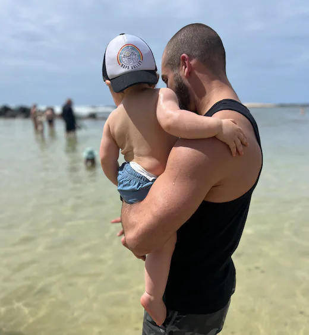

B1051 · For Dads To-Be: 5 Things I Wish I Knew...
Hi {first_name},
In over 15 years of competing as an elite athlete, what has become crystal clear to me is that the real event I was training for was...fatherhood.
Being a new dad has stretched me in ways I never thought possible. And with that, I woke up today inspired to share some real-talk about a few things I wish I'd known before becoming a dad.
1. Seek Out Fathers Who Inspire You Connect with fathers who embody the various qualities you aspire to. These men can provide invaluable advice, support, and encouragement as you navigate the highs and lows of fatherhood. We all need a tribe, and it's important to know you are not alone in this.
2. Prioritize Your Health and Vitality Your life force directly impacts your ability to be present and engaged as a father. As much as my wife and I had focused on the foundations of health (nutrition, hydration, sleep, movement, etc.) as an integral part of our lifestyle already, I underestimated how much being a new dad would require of me.
Making self-care a priority by prioritizing sleep, nourishing your body with nutrient-dense food, drinking quality water, breathing lower and slow, and knowing what type of movement you need, I've found to be essential. This investment will pay many times over in your ability to show up in a powerful way.
3. Nurture The Relationship The best advice I was in fact given early on came from my friend, Dr. Nathan Riley. He mentioned to me on our podcast together, The Path Ep. 10: The Ceremony of Birth & Parenting, that the birth experience would be relatively straight forward. The real work would be with my relationship with Lauren afterward.
Take time to communicate openly and honestly about your fears, dreams, and aspirations. Cultivate a strong connection with your partner, and I suggest exploring helpful communication frameworks such as Nioviolent Communication or Imago Dialogue.
4. Practice Self-Regulation and Capacity Learning to regulate your nervous system and inner experience is crucial for being a safe, grounded place your family can land. I can't emphasize this one enough. Having a daily practice of up to 20 minutes that includes some combination of breath, movement, and meditation will become an anchor when times are challenging. This has been quite possibly the one thing that has helped me cultivate patience and presence most in my relationship and experience being a dad to Luca.
 5. Remember That You Can Have ANY Relationship You Want With Your Child The common saying I had heard around the first two years being "Papa doesn't matter," and "it's all about mom, you just provide financially" to me is BS. What a child craves more than anything is your presence. To me, presence is the currency of fatherhood.
Creatively explore ways to engage and love on your partner and child, such as with touch, reading, singing, drumming, etc. Your bond will only grow, and you can start anytime in any way that feels good to you.
I hope this helps you, or a soon-to-be dad you may know.
Wishing you a kickass day, Mike |